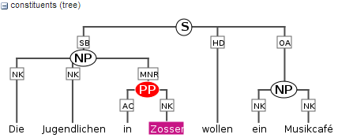
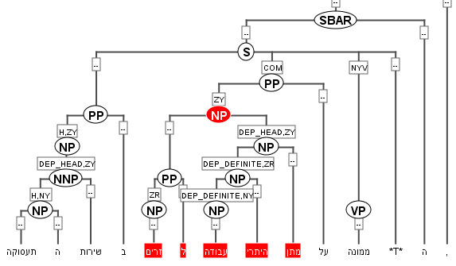
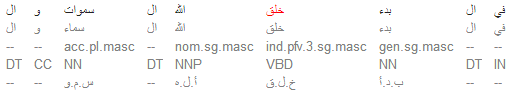
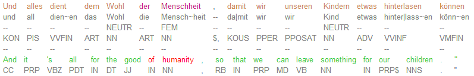
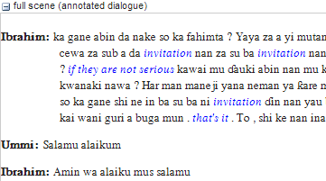

Visualization gallery
Click on the images below to see some applications of the ANNIS visualizer modules
Syntax trees

Arch dependency visualizer

Tree visualizer
{kind=link}
Tree visualizer

Right-to-left tree
{kind=link}
Right-to-left tree

Hierarchical dependency

Ordered dependency
Token and span annotations

KWIC

Standard grid

Hierarchical grid-tree

Right-to-left KWIC
{kind=link}
Right-to-left KWIC
Discourse annotation

Coreference annotation
{kind=link}
Parallel corpora

Parallel KWIC view
{kind=link}
Parallel KWIC view

Aligned discourse view
Aligned multimedia data

Aligned A/V data

Page-aligned
PDF embedding
Custom HTML visualizations
These visualizations were created using configurable annotation-triggered HTML and linked CSS files. For more information on creating your own custom visualizations see the HTML visualization guide.

Movie script visualization
{kind=link}
Movie script visualization

Coptic diplomatic manuscript

Information structure visualization
Aggregate visualizations
A new form of visualization showing quantitative frequency information using aggregation functionality in the ANNIS back-end.

Frequencies visualization